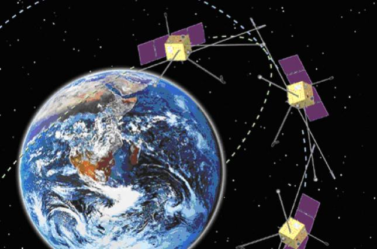
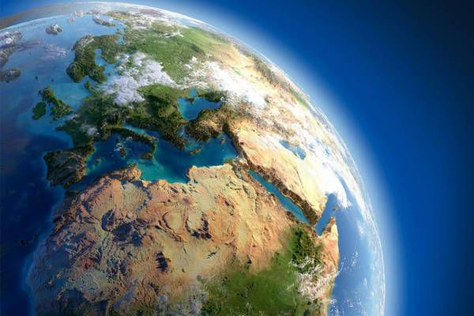

Початок дослідження Землі
Методи
Наша мета- роздивитись географічні методи дослідження
землі:традиційних методів та сучасні методи
Види традиційних методів
- метод спостереження - створення пунктів спостереження, проведення експедицій;
- картографічний метод - зображення та аналіз поширення та розвитку
природних явищ та суспільства за допомогою умовних знаків;
- історичний метод - аналіз розвитку суспільства та природи за весь період їх існування;
- математичні методи - обробка інформації, складання прогнозів.
Види сучасних методів
- комп'ютерне моделювання - створення моделей природних процесів або явищ;
- палеогеографічний - дослідження решток давніх тварин та рослин;
- геофізичний метод - дослідження земної кори та мантії;
- геохімічний метод - дослідження руху хімічних речовин у природних системах;
космічний метод.
Фото Землі

